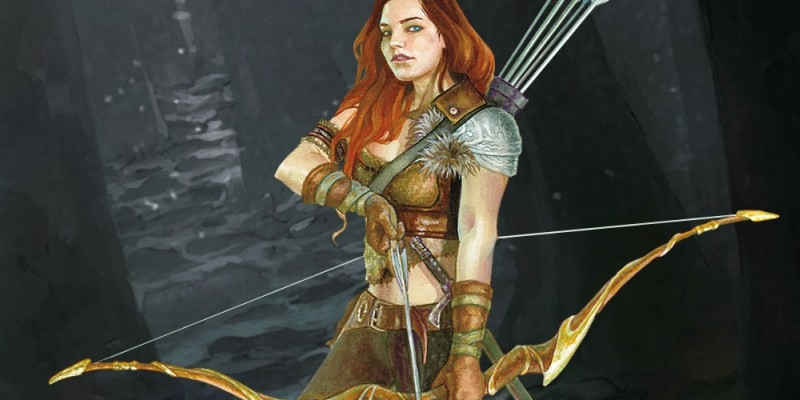

Rôdeur (v2)
Au cours de l'année dernière, vous nous avez vu essayer un certain nombre de nouvelles approches pour le rôdeur, le tout visant à répondre à l'insatisfaction des joueurs en ce qui concerne les hauts niveaux de la classe, et qui la met de loin en première place du classement des classes de D&D les plus faibles.
Ces deux facteurs nous ont donc poussé à réviser la classe. Nous avons d'autres classes faibles, mais qui ont néanmoins des niveaux élevés de satisfaction de la part des joueurs. Cela veut dire que ceux qui jouent ces classes sont contents de la façon dont les capacités de leurs personnages fonctionnent et de leur expérience à la table, même si ces classes ne sont pas les plus fortes. Après tout, toutes les classes ne peuvent être au sommet. De fait, la plupart des problèmes que nous voyons avec les classes sont limités à des capacités spécifiques qui ne pèsent pas beaucoup quand il s'agit de juger la classe dans son ensemble. En d'autres termes, il n'y a pas de classe parfaite, mais chacune est suffisamment bien appréciée pour que les joueurs soient heureux de la jouer.
C'est pour cela que le statut du rôdeur est pour nous une source de préoccupation depuis un certain temps, et que nous présentons aujourd'hui une nouvelle révision du rôdeur. Bien qu'il conserve la plupart des éléments de la classe existante, beaucoup de choses ont changé, et il est donc préférable de tout simplement se jeter dedans pour se faire une idée de la façon dont il a été modifié.
Mais je voudrais aussi parler ici de comment le jeu D&D va évoluer à l'avenir. Tout changement aussi dramatique que la reconstruction d'une classe de personnage nécessite une planification, des vérifications et une mise en œuvre claire et facile.
La phase de planification remonte aux évaluations du playtest. Nous passons en revue les données et lisons des anecdotes sur Reddit, sur les forums et sur les réseaux sociaux. Nous évaluons si aborder une question vaut la perturbation potentielle pour le jeu. Et dans le cas du rôdeur, nous avons estimé que cela valait la peine. Beaucoup de joueurs veulent jouer des rôdeurs, mais seuls quelques-uns étaient satisfaits de la classe, qui se tient au fond du classement de puissance des classes avec une marge importante. Les capacités individuelles de la classe remplissent également le top 10 des capacités individuelles les moins bien notées. Nous avons ensuite passé l'année dernière à expérimenter et à recueillir des commentaires. Nous croyons que si quelque chose n'a pas marché la première fois, nous devons prendre notre temps et nous assurer que la solution est la bonne. Notre bricolage avec le rôdeur nous a donc conduit jusque là, à cette dernière mise à jour.
Notre prochaine étape, qui commence maintenant, est la vérification. Ces modifications sont-elles correctes ? Résolvent-elles des problèmes à votre table ? Les acceptez-vous, que vous soyez joueurs ou MD ? Je pense qu'il y aura encore une ou deux révisions à apporter à la classe, mais je suis confiant que ces changements vont dans la direction que la communauté attend.
Enfin, nous arrivons à la mise en œuvre. Si cette itération du rôdeur, ou une future révision de celui-ci, obtient des notes suffisamment élevées, notre plan est de le présenter comme un rôdeur révisé dans un prochain livre de base de D&D. Les joueurs peuvent sélectionner le rôdeur original ou la version révisée, mais un MD sera toujours libre d'utiliser seulement l'un ou l'autre. Comme vous le verrez en lisant ci-dessous, le rôdeur original et la classe révisée utilisent des tables de progression quasiment identiques, même si les spécificités de certaines caractéristiques diffèrent. Avec un peu de travail de notre côté, nous pouvons faire en sorte que toutes les nouvelles options du rôdeur fonctionnent pour les deux classes.
Capacités de classe
Points de vie
DV : 1d10 par niveau de rôdeur
pv au niveau 1 : 10 + votre modificateur de Constitution
pv aux niveaux suivants : 1d10 (ou 6) + votre modificateur de Constitution
Maîtrises
Armures : armures légères et intermédiaires, boucliers
Armes : armes courantes, armes de guerre
Outils : aucun
Jets de sauvegarde : Force, Dextérité
Compétences : choisissez trois compétences parmi Athlétisme, Discrétion, Dressage, Intuition, Investigation, Nature, Perception et Survie
Équipement
Vous commencez avec l'équipement suivant, en plus de l'équipement accordé par votre historique :
- (a) armure d'écailles ou (b) armure de cuir
- (a) deux épées courtes ou (b) deux armes courantes de corps à corps
- (a) un sac d'exploration souterraine ou (b) un sac d'explorateur
- un arc long et un carquois avec 20 flèches
| Bonus de | Sorts | - Emplacements de sorts - | ||||||
|---|---|---|---|---|---|---|---|---|
| Niv | maîtrise | Capacités | connus | 1 | 2 | 3 | 4 | 5 |
| 1 | +2 | Ennemi juré, Explorateur-né | - | - | - | - | - | - |
| 2 | +2 | Style de combat, Sorts | 2 | 2 | - | - | - | - |
| 3 | +2 | Conclave de rôdeurs, Sens primitifs | 3 | 3 | - | - | - | - |
| 4 | +2 | Amélioration de caractéristiques | 3 | 3 | - | - | - | - |
| 5 | +3 | Capacité du conclave de rôdeurs | 4 | 4 | 2 | - | - | - |
| 6 | +3 | Grand ennemi juré | 4 | 4 | 2 | - | - | - |
| 7 | +3 | Capacité du conclave de rôdeurs | 5 | 4 | 3 | - | - | - |
| 8 | +3 | Amélioration de caractéristiques, Déplacement fluide | 5 | 4 | 3 | - | - | - |
| 9 | +4 | - | 6 | 4 | 3 | 2 | - | - |
| 10 | +4 | Camouflage naturel | 6 | 4 | 3 | 2 | - | - |
| 11 | +4 | Capacité du conclave de rôdeurs | 7 | 4 | 3 | 3 | - | - |
| 12 | +4 | Amélioration de caractéristiques | 7 | 4 | 3 | 3 | - | - |
| 13 | +5 | - | 8 | 4 | 3 | 3 | 1 | - |
| 14 | +5 | Disparition | 8 | 4 | 3 | 3 | 1 | - |
| 15 | +5 | Capacité du conclave de rôdeurs | 9 | 4 | 3 | 3 | 2 | - |
| 16 | +5 | Amélioration de caractéristiques | 9 | 4 | 3 | 3 | 2 | - |
| 17 | +6 | - | 10 | 4 | 3 | 3 | 3 | 1 |
| 18 | +6 | Sens sauvages | 10 | 4 | 3 | 3 | 3 | 1 |
| 19 | +6 | Amélioration de caractéristiques | 11 | 4 | 3 | 3 | 3 | 2 |
| 20 | +6 | Tueur d'ennemis | 11 | 4 | 3 | 3 | 3 | 2 |
Ennemi juré
À partir du niveau 1, vous avez des compétences significatives pour pister, chasser et même communiquer avec un certain type d'ennemi que l'on rencontre communément dans la nature. Choisissez un type d'ennemi juré : bêtes, fées, humanoïdes, monstruosités ou morts-vivants. Vous obtenez un bonus de +2 aux dégâts d'attaques avec une arme contre les créatures du type choisi. De plus, vous avez un avantage aux jets de Sagesse (Survie) pour pister vos ennemis favoris, ainsi qu'aux jets d'Intelligence pour obtenir des renseignements sur ceux-ci. Quand vous obtenez cette capacité, vous apprenez également une langue de votre choix, normalement celle qui est parlée par vos ennemis favoris, même si vous êtes libre de choisir celle que vous voulez.
Explorateur-né
Vous êtes maître dans l'art de vous déplacer dans le monde naturel, et vous réagissez rapidement en cas d'attaque. Cela vous donne les avantages suivants :
- Vous ignorez les terrains difficiles.
- Vous avez un avantage aux jets d'initiative.
- Lors du premier tour d'un combat, vous avez un avantage aux jets d'attaque contre les créatures qui n'ont pas encore agi.
En outre, vous êtes habile pour vous déplacer dans la nature sauvage. Vous gagnez les avantages suivants lorsque vous voyagez au moins une heure :
- Un terrain difficile ne ralentit pas le voyage de votre groupe.
- Votre groupe ne peut pas se perdre, sauf par des moyens magiques.
- Même lorsque vous êtes engagé dans une autre activité tout en voyageant (comme la recherche de nourriture, la navigation ou le pistage), vous restez alerte face au danger.
- Si vous voyagez seul, vous pouvez vous déplacer furtivement à un rythme normal.
- Lorsque vous cherchez de la nourriture, vous en trouvez deux fois plus que normalement.
- Lorsque vous pistez d'autres créatures, vous découvrez aussi leur nombre exact, leurs tailles, et depuis combien de temps elles sont passées dans la zone.
Style de combat
Au niveau 2, Vous adoptez un style particulier de combat qui sera votre spécialité. Choisissez l'une des options suivantes. Vous ne pouvez pas prendre une option de Style de combat plus d'une fois, même si vous obtenez plus tard la possibilité de choisir un nouveau style.
Archerie
Vous obtenez un bonus de +2 à l'attaque avec une arme à distance.
Combat à deux armes
Lorsque vous vous engagez dans un combat avec deux armes en mains, vous pouvez ajouter votre modificateur de caractéristique aux dégâts de la seconde attaque.
Défense
Si vous portez une armure, vous obtenez un bonus de +1 à la CA.
Duel
Lorsque vous attaquez avec une arme de corps à corps dans une main et aucune autre arme, vous obtenez un bonus de +2 aux dégâts avec cette arme.
Sorts
Au moment où vous atteignez le niveau 2, vous avez appris à utiliser l'essence magique de la nature pour lancer des sorts, tout comme le fait un druide.
Emplacements de sorts
La table ci-dessus montre combien d'emplacements de sorts vous avez pour lancer vos sorts de rôdeur de niveau 1 et supérieur. Pour lancer un de ces sorts, vous devez dépenser un emplacement du niveau du sort ou supérieur. Vous regagnez tous les emplacements de sorts dépensés lorsque vous terminez un repos long. Par exemple, si vous avez préparé le sort de niveau 1 amitié avec les animaux et qu'il vous reste un emplacement de niveau 1 et un emplacement de niveau 2, vous pouvez lancer ce sort avec n'importe lequel de ces deux emplacements.
Sorts connus de niveau 1 et supérieur
Vous connaissez deux sorts de niveau 1, à choisir dans la liste des sorts de rôdeur. La colonne Sorts connus de la table ci-dessus indique les niveaux auxquels vous apprenez de nouveaux sorts de rôdeur de votre choix. Chacun de ces sorts doit être d'un niveau pour lequel vous possédez un emplacement de sort, comme indiqué dans la table. Par exemple, lorsque vous atteignez le niveau 5 de cette classe, vous pouvez apprendre un nouveau sort de niveau 1 ou 2.
En outre, lorsque vous gagnez un niveau dans cette classe, vous pouvez choisir un sort de rôdeur que vous connaissez et le remplacer par un autre sort choisi dans la liste de sorts de rôdeur, celui devant également être d'un niveau pour lequel vous possédez un emplacement de sort.
Caractéristique d'incantation
La Sagesse est votre caractéristique d'incantation pour vos sorts de rôdeur, car le pouvoir de votre magie vient de votre lien avec la nature. Vous utilisez votre Sagesse chaque fois qu'un sort se réfère à votre capacité de lancer des sorts. En outre, vous utilisez votre modificateur de Sagesse pour définir le DD du jet de sauvegarde d'un sort de rôdeur que vous lancez, ainsi que pour le jet d'attaque de celui-ci.
DD de sauvegarde des sorts = 8 + votre bonus de maîtrise + votre modificateur de Sagesse
Modificateur aux attaques avec un sort = votre bonus de maîtrise + votre modificateur de Sagesse
Sens primitifs
À partir du niveau 3, votre maîtrise des connaissances de rôdeur vous permet d'établir un puissant lien avec les bêtes et le terrain autour de vous. Vous avez une capacité innée pour communiquer avec les bêtes, et celles-ci vous reconnaissent comme une âme sœur. Par l'intermédiaire de sons et de gestes, vous pouvez communiquer des idées simples à une bête au prix d'une action, et pouvez lire son humeur et ses principales intentions. Vous ressentez son état émotionnel, si elle est affectée par une magie, ses besoins à court terme (tels que de la nourriture ou de la sécurité), et les actions que vous pouvez prendre (le cas échéant) pour la convaincre de ne pas attaquer. Vous ne pouvez pas utiliser cette capacité contre une créature que vous avez attaquée dans les 10 dernières minutes.
En outre, vous pouvez lier vos sens pour savoir si l'un de vos ennemis favoris se cache à proximité. En vous concentrant 1 minute sans interruption (comme si vous vous concentriez sur un sort), vous pouvez ressentir si l'un de vos ennemis favoris est présent dans un rayon de 7,5 kilomètres autour de vous. Cette capacité révèle qui de vos ennemis favoris est présent, leur nombre, ainsi que la direction générale des créatures et la distance (en kilomètres) qui vous en sépare. Si plusieurs groupes de vos ennemis favoris sont à portée, vous obtenez ces informations pour chaque groupe.
Conclave de rôdeurs
Au niveau 3, vous choisissez de rejoindre les idéaux et la formation d'un conclave de rôdeurs : le conclave des bêtes, le conclave des chasseurs ou le conclave des profondeurs, tous détaillés à la fin de la description de cette classe. Votre choix vous accorde des capacités au niveau 3 et ensuite aux niveaux 5, 7, 11 et 15.
Amélioration de caractéristiques
Au niveau 4, puis par la suite aux niveaux 8, 12, 16 et 19, vous pouvez augmenter une valeur de caractéristique de votre choix de +2, ou bien augmenter deux valeurs de caractéristique de votre choix de +1. Vous ne pouvez cependant pas augmenter une caractéristique au-delà de 20 par ce biais.
Grand ennemi juré
Au niveau 6, vous êtes prêt à chasser du gibier encore plus mortel. Choisissez un type de grand ennemi juré : aberrations, célestes, créatures artificielles, dragons, élémentaires, fiélons ou géants. Vous gagnez contre cet ennemi les mêmes avantages que vous avez normalement contre votre ennemi juré, y compris une langue supplémentaire. Votre bonus de dégâts contre tous vos ennemis favoris passe à +4. De plus, vous avez un avantage aux jets de sauvegarde contre les sorts et les capacités utilisées par un grand ennemi juré.
Déplacement fluide
À partir du niveau 8, vous pouvez utiliser l'action Foncer en tant qu'action bonus à votre tour.
Camouflage naturel
À partir de niveau 10, vous pouvez rester parfaitement immobile pendant de longues périodes de temps pour préparer des embuscades. Lorsque vous essayez de vous cacher à votre tour, vous pouvez choisir de ne pas vous déplacer pour ce tour. Si vous évitez un déplacement, les créatures qui tentent de vous détecter ont une pénalité de -10 à leurs jets de Sagesse (Perception) jusqu'au début de votre prochain tour. Vous perdez cet avantage si vous vous déplacez ou tombez à terre, que cela soit volontaire ou à cause d'un effet externe. Vous êtes toujours automatiquement détecté si un effet ou une action vous amène à ne plus être caché. Si vous êtes toujours caché lors de votre prochain tour, vous pouvez continuer à rester immobile et bénéficier de cet avantage jusqu'à ce que vous soyez détecté.
Disparition
À partir du niveau 14, vous pouvez utiliser l’action Se cacher en tant qu'action bonus à votre tour. En outre, vous ne pouvez pas être suivi par des moyens non magiques, sauf si vous choisissez de laisser une trace.
Sens sauvages
Au niveau 18, vous gagnez un sens surnaturel qui vous aide à combattre les créatures que vous ne pouvez pas voir. Lorsque vous attaquez une créature que vous ne pouvez pas voir, votre incapacité à voir ne vous impose pas un désavantage à vos jets d'attaque contre elle. Vous êtes également au courant de l'emplacement d'une créature invisible dans un rayon de 9 mètres autour de vous, à condition que la créature ne se soit pas cachée vis-à-vis de vous et que vous ne soyez pas aveuglé ou assourdi.
Tueur d'ennemis
Au niveau 20, vous devenez un chasseur hors pair. Une fois à chacun de vos tours, vous pouvez ajouter votre modificateur de Sagesse au jet d'attaque ou de dégâts d'une attaque que vous effectuez. Vous pouvez choisir d'utiliser cette capacité avant ou après le jet, mais avant que les effets du jet ne soient appliqués.
Conclaves de rôdeurs
À travers les étendues sauvages, les rôdeurs se réunissent pour former des conclaves, sorte d'associations dont les membres partagent une vision similaire sur la meilleure façon de protéger la nature de ceux qui voudraient la dépouiller.
Conclave des bêtes
De nombreux rôdeurs sont plus à l'aise dans la nature que dans la civilisation, au point que des animaux les considèrent comme leurs pairs. Les rôdeurs du conclave des bêtes développent un lien étroit avec une bête, puis renforce encore plus de lien grâce à la magie.
Compagnon animal
Au niveau 3, vous apprenez à utiliser votre magie pour créer un puissant lien avec une créature du monde naturel. Après 8 heures de travail et une dépense de 50 po en herbes rares et nourriture raffinée, vous attirez un animal des étendues sauvages qui se convertira en votre fidèle compagnon. Vous choisissez normalement votre compagnon parmi les animaux suivants : un singe, un ours noir, un sanglier, un blaireau géant, une belette géante, une mule, une panthère ou un loup. Cependant, votre MD peut choisir l'animal à votre place, en fonction du terrain environnant et des créatures qui devraient logiquement être présentes dans la zone. À la fin des 8 heures, votre compagnon animal apparaît et obtient tous les avantages de la capacité Lien du compagnon.
POURQUOI QUITTER LES ATTAQUES MULTIPLES ?
Attaques multiples est un outil de conception qui maintient les monstres simples à utiliser pour le MD. Il booste l'offensive, mais cela est prévu pour ne servir que durant un seul combat, ce qui ne cadre plus lorsque l'on parle d'une bête qui accompagne un groupe au lieu de le combattre. Si l'on garde Attaques multiples, on court le risque que le compagnon animal surclasse les guerriers et les barbares du groupe. En termes d'histoire, disons que votre compagnon animal a échangé une partie de sa férocité (représentée par Attaques multiples) contre une meilleure prise de conscience et la capacité de lutter plus efficacement de concert avec vous.
GARDER LA TRACE DE LA MAÎTRISE
Quand vous gagnez votre compagnon animal au niveau 3, son bonus de maîtrise est égal au votre, soit +2. Lorsque vous gagnez des niveaux et augmentez votre bonus de maîtrise, rappelez-vous que le bonus de maîtrise de votre compagnon augmente aussi, et s'applique aux concepts suivants : la classe d'armure, les compétences, les jets de sauvegarde, le bonus d'attaque et les jets de dégâts.
ÉLARGIR LES OPTIONS DE COMPAGNON
Selon votre campagne, le MD peut choisir d'élargir les options pour votre compagnon animal. En règle générale, une bête peut servir de compagnon animal si elle est de taille M ou plus petite, possède au plus 15 points de vie, et ne peut pas infliger plus de 8 points de dégâts avec une seule attaque. En général, cela vaut pour les créatures avec un facteur de puissance de 1/4 ou moins, mais il y a des exceptions.
Vous ne pouvez avoir qu'un seul compagnon animal à la fois. Si celui-ci est tué, le lien magique vous partagez avec lui vous permet de le faire revenir à la vie. Après 8 heures de travail et une dépense de 25 po en herbes rares et nourriture raffinée, vous rappelez l'esprit de votre compagnon et utilisez votre magie pour lui créer un nouveau corps. Vous pouvez faire revenir à la vie un compagnon animal de cette manière même si vous ne possédez aucune partie de son corps. Si vous utilisez cette capacité pour faire revenir à la vie un ancien compagnon animal alors que vous avez à ce moment un autre compagnon animal, votre compagnon actuel vous délaisse et est remplacé par le compagnon ressuscité.
Lien du compagnon
Votre compagnon animal gagne divers avantages lorsqu'il est lié à vous, mais perd son action Attaques multiples, s'il en a une. Il obéit à vos ordres du mieux qu'il peut et jette l'initiative comme toute autre créature, mais vous déterminez ses actions, ses décisions, son attitude, etc. Si vous êtes incapable d'agir ou absent, votre compagnon agit de son propre chef. Lorsque vous utilisez votre capacité Explorateur-né, vous et votre compagnon animal pouvez tous les deux vous déplacer discrètement à un rythme normal.
Votre compagnon animal possède des capacités et des statistiques déterminées en partie par votre niveau. Votre compagnon utilise votre bonus de maîtrise au lieu du sien. En plus des cas où il utilise normalement son bonus de maîtrise, un compagnon animal ajoute également son bonus de maîtrise à sa CA et à ses jets de dégâts. Votre animal de compagnie gagne la maîtrise de deux compétences de votre choix. Il maîtrise également tous les jets de sauvegarde. Pour chaque niveau que vous gagnez après le niveau 3, votre compagnon animal gagne un dé de vie supplémentaire et augmente ses points de vie en conséquence. Chaque fois que vous gagnez la capacité Amélioration de caractéristiques, les caractéristiques de votre compagnon s'améliorent également. Votre compagnon peut augmenter une caractéristique de votre choix de +2, ou augmenter deux caractéristiques de votre choix de +1. Votre compagnon ne peut toutefois pas augmenter une caractéristique à plus de 20 de cette manière, sauf si sa description le précise autrement. Votre compagnon partage votre alignement, et possède un trait de personnalité et un défaut que vous pouvez déterminer ou choisir au hasard dans les tables ci-dessous. Votre compagnon partage votre idéal, et son lien est toujours « Le rôdeur qui voyage avec moi est un compagnon que j'aime et pour qui je donnerais volontiers ma vie ».
Votre compagnon animal gagne les avantages de votre Ennemi juré, ainsi que de votre Grand ennemi juré lorsque vous gagnez cette capacité au niveau 6. Il utilise les mêmes ennemis favoris que ceux que vous avez sélectionnés pour ces capacités.
| d6 | Trait |
|---|---|
| 1 | Je suis indomptable face à l'adversité. |
| 2 | Menacer mes amis c'est me menacer. |
| 3 | Je reste en alerte pour que les autres puissent se reposer. |
| 4 | Les gens voient en moi un animal et me sous-estiment. J'utilise cela à mon avantage. |
| 5 | Je suis doué pour apparaître juste à temps. |
| 6 | Je fais toujours passer les besoins de mes amis avant les miens. |
| d6 | Défaut |
|---|---|
| 1 | Si on laisse de la nourriture sans surveillance, je la mange |
| 2 | Je grogne face aux étrangers, et tout le monde hormis mon rôdeur sont des étrangers pour moi. |
| 3 | N'importe quel moment est toujours un bon moment pour un massage du ventre. |
| 4 | J'ai une peur panique de l'eau. |
| 5 | Ma façon de dire bonjour est une rafale de coups de langue sur le visage. |
| 6 | Je saute sur les créatures pour leur dire combien je les aime. |
Attaque coordonnée
À partir du niveau 5, vous et votre compagnon animal formez une puissante équipe de combat. Lorsque vous utilisez l'action Attaquer à votre tour, si votre compagnon animal peut vous voir, il peut utiliser sa réaction pour faire une attaque au corps à corps.
Défense de la bête
Au niveau 7, votre compagnon a un avantage à tous ses jets de sauvegarde, tant qu'il peut vous voir.
Furie de griffes et de crocs
Au niveau 11, votre compagnon peut utiliser son action pour réaliser une attaque au corps à corps contre chaque créature de son choix dans un rayon de 1,50 mètre autour de lui, avec un jet d'attaque séparé pour chaque cible.
Défense de la bête supérieure
Au niveau 15, chaque fois qu'un attaquant que votre compagnon animal peut voir le touche lors d'une attaque, votre compagnon peut utiliser sa réaction pour réduire de moitié les dégâts de l'attaque contre lui.
Conclave des chasseurs
Certains rôdeurs cherchent à maîtriser les armes afin de mieux protéger la civilisation des terreurs des étendues sauvages. Les membres du conclave des chasseurs apprennent des techniques de combat spécialisés pour lutter contre les menaces les plus graves, des ogres déchaînés et des hordes d'orcs aux imposants géants et autres dragons terrifiants.
Proie du chasseur
Au niveau 3, vous gagnez l'une des capacités suivantes de votre choix.
Tueur de colosses. Votre ténacité peut user les ennemis les plus puissants. Quand vous touchez une créature lors d'une attaque avec une arme, la créature prend 1d8 dégâts supplémentaires si elle est sous son maximum de points de vie. Vous ne pouvez infliger ces dégâts supplémentaires qu'une fois par tour.
Tueur de géants. Quand une créature, de taille G ou supérieure et située à 1,50 mètre ou moins de vous, vous touche ou vous manque lors d'une attaque, vous pouvez utiliser votre réaction pour attaquer cette créature immédiatement après son attaque, à condition que vous puissiez voir la créature.
Briseur de horde. Une fois à chacun de vos tours, lorsque vous faites une attaque avec une arme, vous pouvez faire une autre attaque avec la même arme contre une créature différente qui se situe à 1,50 mètre ou moins de la cible initiale et à portée de votre arme.
Attaque supplémentaire
À partir du niveau 5, vous pouvez attaquer deux fois, au lieu d'une seule, chaque fois que vous réalisez l’action Attaquer durant votre tour.
Tactiques défensives
Au niveau 7, vous gagnez l'une des capacités suivantes de votre choix.
Échapper à la horde. Les attaques d'opportunité effectuées contre vous ont un désavantage.
Défense contre les attaques multiples. Quand une créature vous touche lors d'une attaque, vous gagnez un bonus de +4 à la CA contre toutes les attaques ultérieures effectuées par cette créature pour le reste du tour.
Moral d'acier. Vous avez un avantage aux jets de sauvegarde pour ne pas être effrayé.
Attaques multiples
Au niveau 11, vous gagnez l'une des capacités suivantes de votre choix.
Salve. Vous pouvez utiliser votre action pour faire une attaque à distance contre n'importe quel nombre de créatures situées à 3 mètres ou moins d'un point que vous pouvez voir et à portée de votre arme. Vous devez avoir assez de munitions pour chaque cible, logiquement, et devez faire un jet d'attaque distinct pour chaque cible.
Attaque tourbillonnante. Vous pouvez utiliser votre action pour réaliser une attaque au corps à corps contre toutes les créatures à 1,50 mètre ou moins de vous, avec un jet d'attaque distinct pour chaque cible.
Défense du chasseur supérieure
Au niveau 15, vous gagnez l'une des capacités suivantes de votre choix.
Esquive totale. Lorsque vous êtes soumis à un effet qui vous permet de faire un jet de sauvegarde de Dextérité pour ne prendre que la moitié des dégâts, comme pour le souffle ardent d'un dragon rouge ou un sort de foudre, vous ne prenez à la place aucun dégât si vous réussissez le jet, et seulement la moitié des dégâts si vous échouez.
Retour de bâton. Quand une créature hostile vous manque lors d'une attaque au corps à corps, vous pouvez utiliser votre réaction pour forcer cette créature à répéter la même attaque contre une autre créature (autre qu'elle-même) de votre choix.
Esquive instinctive. Quand un attaquant que vous pouvez voir vous touche lors d'une attaque, vous pouvez utiliser votre réaction pour réduire de moitié les dégâts de l'attaque contre vous.
Conclave des profondeurs [Deep Stalker]
La plupart des gens ne descendent dans les profondeurs de l'Outreterre que par obligation, pour entreprendre une quête désespérée ou suite à la promesse de grandes richesses. Trop souvent, des suppôts du Mal se tapissent sous terre, et les rôdeurs du conclave des profondeurs cherchent à découvrir et à vaincre ces menaces avant qu'elles ne puissent atteindre la surface.
Éclaireur de l'Outreterre
Au niveau 3, vous maîtrisez l'art de l'embuscade. Lors de votre premier tour d'un combat, vous gagnez un bonus de +3 à votre vitesse, et si vous utilisez l'action Attaquer, vous pouvez effectuer une attaque supplémentaire.
Vous êtes aussi habile à éviter les créatures qui dépendent de la vision dans le noir. Ces créatures n'acquièrent pas d'avantage lorsqu'elles tentent de vous détecter dans des conditions de lumières faibles ou de ténèbres. En outre, lorsque le MD détermine si vous pouvez vous cacher d'une créature, celle-ci n'obtient pas un avantage pour sa vision dans le noir.
Magie des profondeurs
Au niveau 3, vous gagnez la vision dans le noir à 27 mètres. Si vous possédiez déjà vision dans le noir, vous augmentez sa portée de 9 mètres.
Vous gagnez aussi l'accès à des sorts supplémentaires aux niveaux 3, 5, 9, 13 et 15. Lorsque vous gagnez un sort des profondeurs, celui-ci compte comme un sort de rôdeur pour vous, mais ne compte pas pour le nombre de sorts de rôdeurs que vous connaissez.
| Niveau de rôdeur |
Sorts |
|---|---|
| 3 | déguisement |
| 5 | corde enchantée |
| 9 | glyphe de protection |
| 13 | invisibilité supérieure |
| 17 | apparence trompeuse |
Attaque supplémentaire
À partir du niveau 5, vous pouvez attaquer deux fois, au lieu d'une seule, chaque fois que vous réalisez l’action Attaquer durant votre tour.
Esprit d'acier
Au niveau 7, vous gagnez la maîtrise des jets de sauvegarde de Sagesse.
Rafale du traqueur
À partir de niveau 11, une fois à chacun de vos tours lorsque vous manquez une attaque, vous pouvez réaliser une autre attaque.
Esquive du traqueur
Au niveau 15, chaque fois qu'une créature vous attaque et n'a pas un avantage, vous pouvez utiliser votre réaction pour imposer un désavantage au jet d'attaque de la créature contre vous. Vous pouvez utiliser cette capacité avant ou après que le jet d'attaque soit fait, mais avant que le résultat du jet soit déterminé.

Écrit par Mike Mearls, traduit par blueace